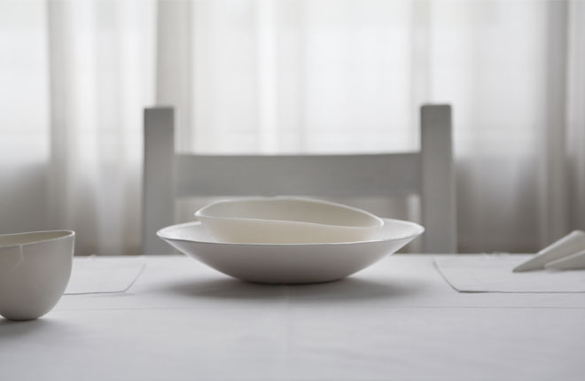
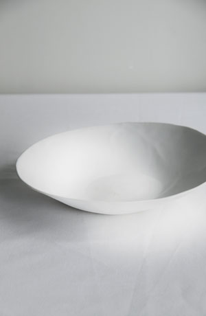
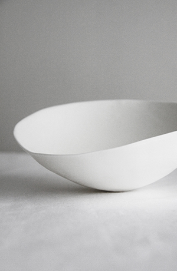
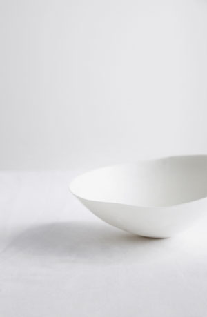
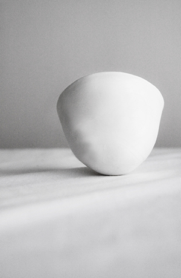
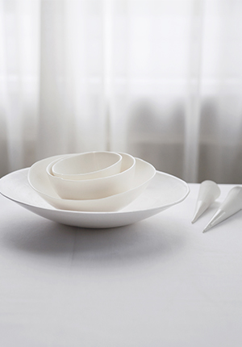
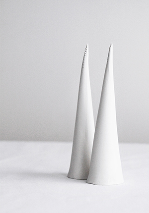
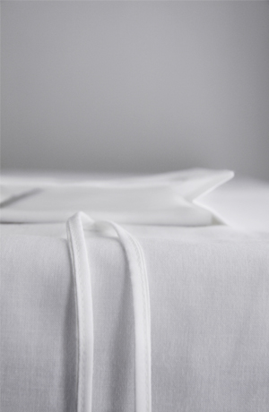
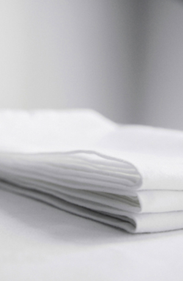

Collectie balance









Tableware line Balance
Het tableware is onderdeel van de dining experience Focus, bestaande uit bord, diepbord, kom, drinknap, eetvingers en tafellinnen.
Een tableware set waar het draait om de focus van het eten. Het tableware voeld zo fijn en glad als eierschalen. Dit bone china tableware is dun en toch ongelooflijk sterk. Elk stuk word met de hand gemaakt is wiebelig en uniek van vorm.
Opdrachtgever: Hôtel droog
Categorie: Stills, product, in opdracht
Concept, product, styling Willemien van den Broek
Fotografie: Ester Tak & Willemien van den Broek
© 2014 willemien van den broek